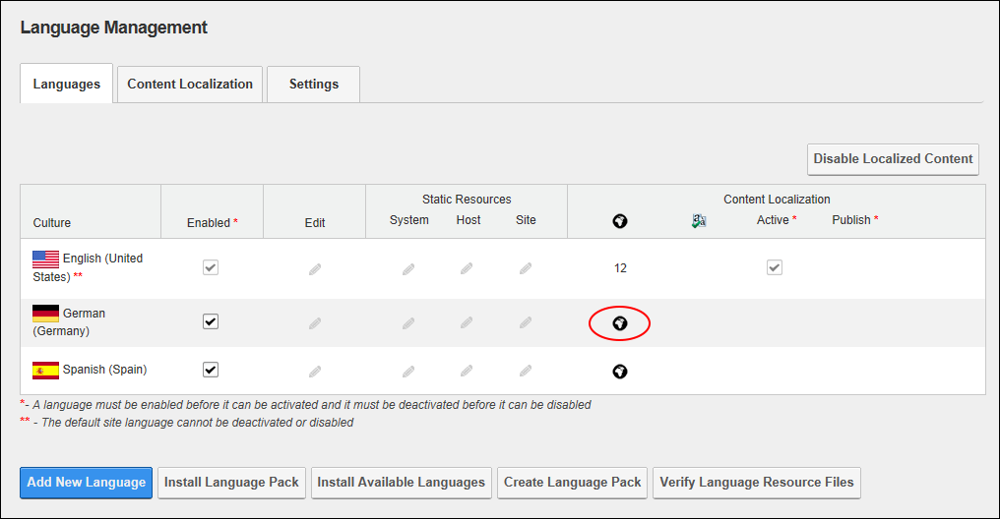
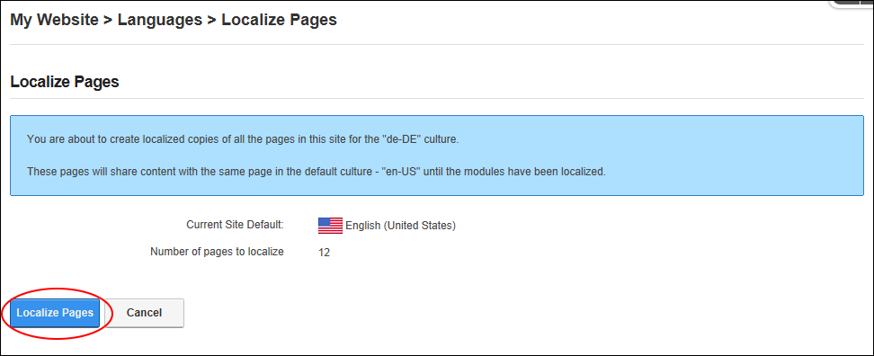
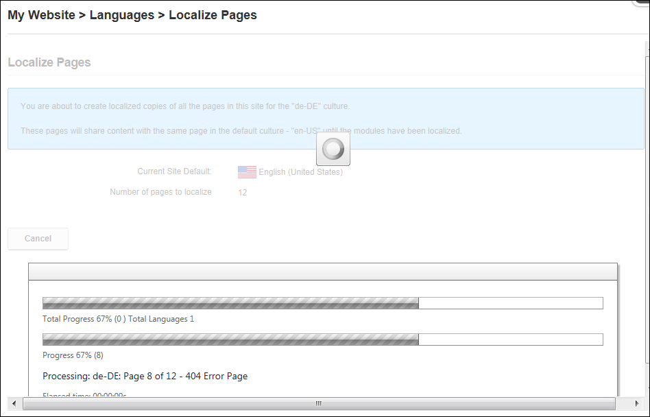
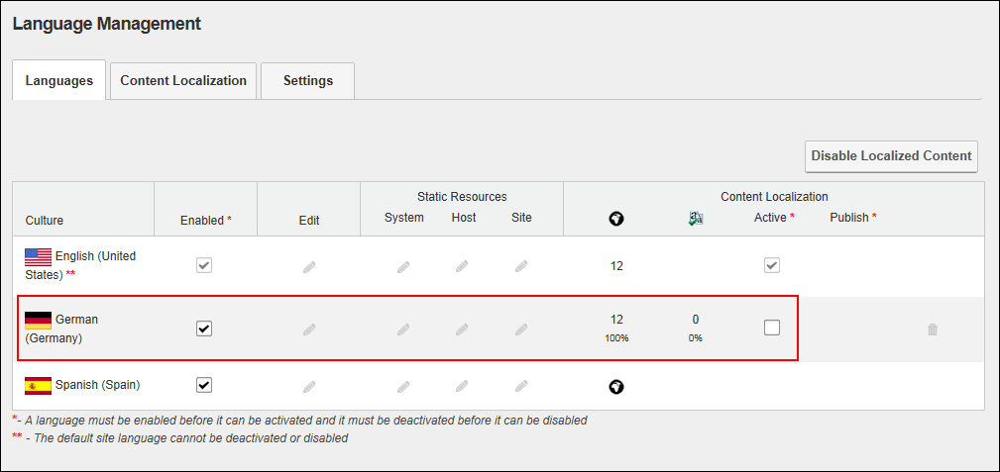

Creating Localized Pages for a Language
How to create localized pages for a language that has been added to the site but does not yet have localized pages created. This can occur if localization was enabled when a language was disabled or if localization was enabled but not all pages were set as translatable, therefore the individual pages need to be chosen. Users must be granted Edit Module/Add Content permissions to the Languages module.
Localized content must be enabled. See "Enabling Localized Content"
- Navigate to Admin > Advanced Settings >
 Languages - OR - Go to a Languages module.
Languages - OR - Go to a Languages module.
- Select the Languages tab.
- Optional. In the Enabled column of the Culture grid, beside the language if it is not yet enabled.
- In the Content Location - No of Pages column of the Culture grid, click the Create Pages In This Language button beside the required language.

- This opens the Localize Pages page that displays the number of pages that will be localized at the "Number of Pages to Localize" field.
- Click the Localize Pages button.

- This displays a progress bar that lists each of the pages and content that is being created for the chosen language.

- Once all the translations are completed, you are returned to the Languages module and you can see the current status of translations for the language. E.g. There are 12 pages of translations created which is 100% of the total number of site pages and of those 12 pages, zero percent ( 0% ) have been marked as translation completed. The language is not active on the site.

Next Steps: You are now ready to begin translations for this language. See "Translating a Page" and See "Translating a Module"